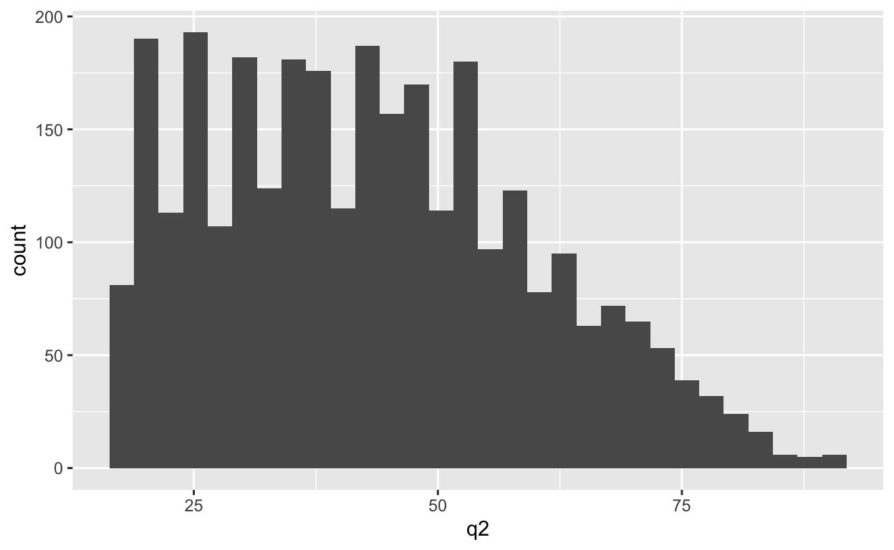
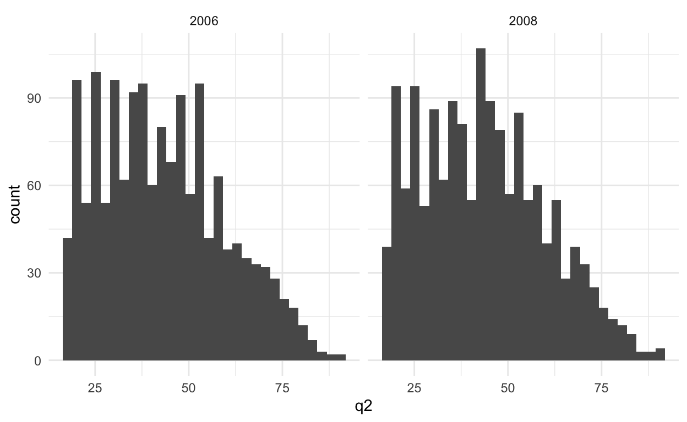
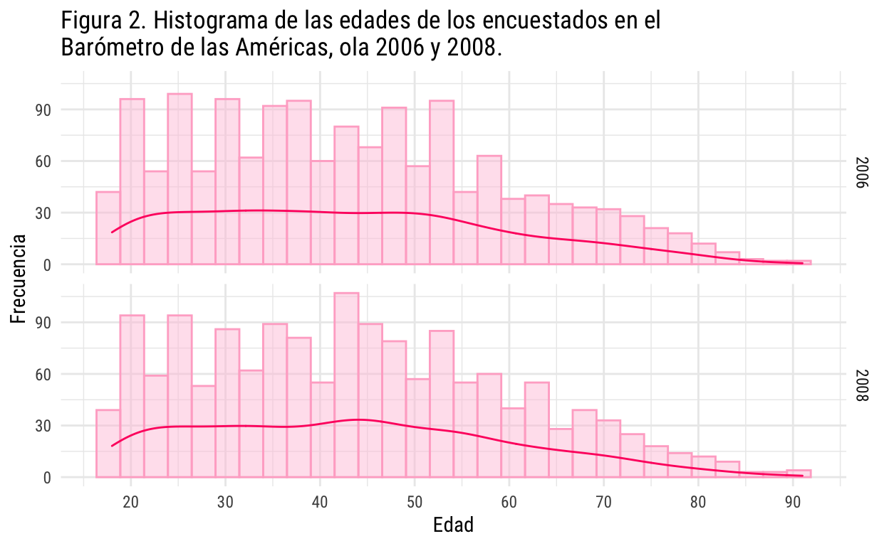
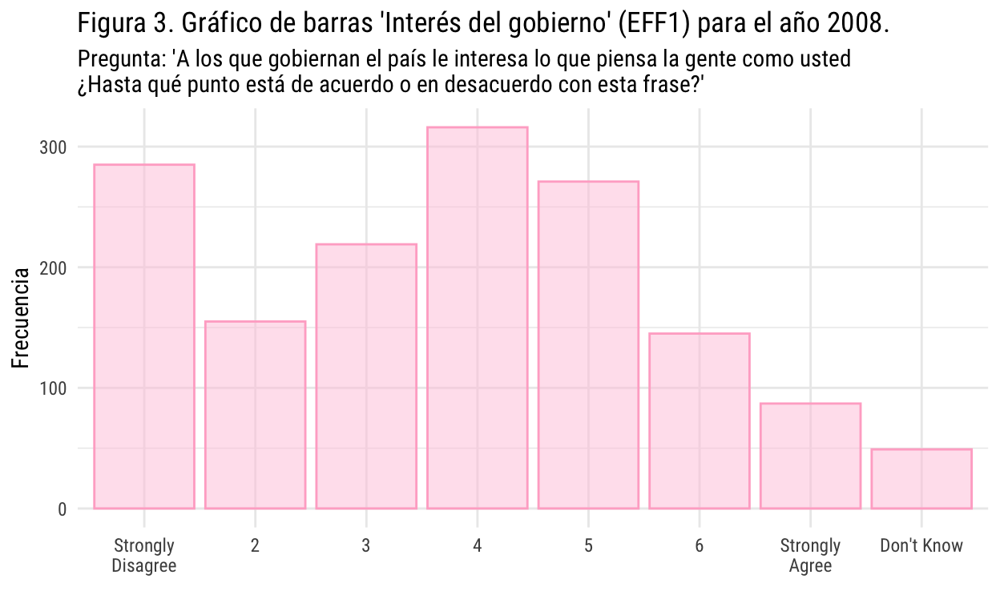

Taller 03:
En la clase anterior, vimos los diferentes tipos de datos con los que nos podríamos encontrar. Estos pueden dividirse en datos cualitativos y datos cuantitativos dependiendo en el objeto que estén midiendo. Los datos cuantitativos pueden er clasificados como métricos y no métricos, basado en las características que definen las distancia entre los valores de la escala.
Los datos no-métrico también los podemos encontrar como “datos cualitativos” ya que representan valores no numéricos. La más simple es una escala binaria donde sólo encontramos dos categorías. Las escalas nominales u ordinales pueden tener varias categorías dependiendo de la variable de interés.
Los datos métricos pueden ser clasificados en datos discretos y continuos. Cuando nos referimos a datos discretos, hablamos de datos que pueden ser cuantificados y expresado en valores enteros. Cuando los datos pueden ser cuantificados con los valores reales, se dice que es una variable continua.
 Considerando el tipo de variable que tenemos en nuestro análisis, es el tipo de test de hipótesis que debemos realizar. Para la siguiente sección, utilizaremos el concepto “categórico” para hablar de las variables no-métricas o “cualitativas” y usaremos el concepto “continuo” para las variables métricas.
Considerando el tipo de variable que tenemos en nuestro análisis, es el tipo de test de hipótesis que debemos realizar. Para la siguiente sección, utilizaremos el concepto “categórico” para hablar de las variables no-métricas o “cualitativas” y usaremos el concepto “continuo” para las variables métricas.
Gráficos univariados y bivariados:
El Proyecto de Opinión Pública de América Latina más conocido como LAPOP es un centro de estudios de opinión y comportamiento. Este centro se destaca por sus altos estándares de calidad en cada uno de los procesos de encuestaje: desde el diseño del cuestionario y la definición de la muestra, el trabajo en terreno a través del pretesteo del cuestionario y el trabajo de campo, y su posterior supervisión; hasta el procesamiento y análisis de los datos.
En sus inicios, Mitchell A. Seligson (fundador y Senior Advisor de LAPOP) inició LAPOP para medir e investigar los valores democráticos en Costa Rica, y con el tiempo se fue ampliando al resto de América Latina. en este caso particular, nosotros revisaremos la encuesta Barómetro de las Américas que estudia los valores democráticos de países en Norteamérica, Suramérica y Centroamérica.
Pueden encontrar las bases de datos en la página principal de LAPOP.
Utilizaremos esta base de datos para hacer el siguiente ejercicio:
Primero, cargaremos los paquetes que utilizaremos en esta sesión:
Y cargaremos la base de datos con variables ya seleccionadas:
Entonces, nuestra base de datos contiene las siguientes variables:
| Pregunta | Columna | 2004 | 2006 | 2008 | 2010 | 2012 | 2014 | 2017 | 2018 |
|---|---|---|---|---|---|---|---|---|---|
| ¿Ha participado Ud. en una manifestación o protesta pública? ¿Lo ha hecho algunas veces, casi nunca o nunca? | PROT1 | ✓ | ✓ | ✓ | |||||
| En el último año ha participado en una manifestación o protesta pública ¿lo ha hecho algunas veces, casi nunca o nunca? | PROT2 | ✓ | ✓ | ||||||
| En los últimos 12 meses ha participado en una manifestacion o protesta pública | PROT3 | ✓ | ✓ | ✓ | ✓ | ✓ | |||
| Cuantas veces ha participado en una manifestación o protesta pública en los últimos 12 meses | PROT4 | ✓ | ✓ | ||||||
| ¿Para resolver sus problemas alguna vez ha pedido Ud. ayuda o cooperación…? A algún diputado de la Asamblea Legislativa | CP2 | ✓ | ✓ | ✓ | ✓ | ✓ | |||
| ¿Para resolver sus problemas alguna vez ha pedido Ud. ayuda o cooperación…? A algún ministerio, institución pública u oficina del gobierno nacional | CP4A | ✓ | ✓ | ✓ | ✓ | ✓ | ✓ | ||
| ¿Para resolver sus problemas alguna vez ha pedido Ud. ayuda o cooperación…? A alguna autoridad local (alcalde, municipalidad o corregimiento) | CP4 | ✓ | ✓ | ✓ | ✓ | ✓ | |||
| Ahora, hablando de la gente de aquí, ¿diría que la gente de su comunidad es…? Muy confiable, algo confiable, poco confiable, nada confiable. | IT1 | ✓ | ✓ | ✓ | ✓ | ✓ | ✓ | ✓ | ✓ |
| A los que gobiernan el país le interesa lo que piensa la gente como usted ¿Hasta qué punto está de cuerdo o en desacuerdo con esta frase? | EFF1 | ✓ | ✓ | ✓ | ✓ | ✓ | ✓ | ||
| En general, usted diría que está muy satisfecho, satisfecho, insatisfecho o muy insatisfecho con la forma en que la democracia funciona en (pais) | PN4 | ✓ | ✓ | ✓ | ✓ | ✓ | ✓ | ||
| Hasta qué punto tiene respeto por las instituciones políticas de (país) | B2 | ✓ | ✓ | ✓ | ✓ | ✓ | ✓ | ✓ | ✓ |
| Hasta qué punto cree que los tribunales de justicia garantizan un juicio justo | B1 | ✓ | ✓ | ✓ | ✓ | ✓ | ✓ | ✓ | ✓ |
| Hasta qué punto cree que los derechos báscos del ciudadano están bien protegidos por el sistema político (país) | B3 | ✓ | ✓ | ✓ | ✓ | ✓ | ✓ | ✓ | ✓ |
| Hasta que punto tiene confianza en el sistema de justicia | B10A | ✓ | ✓ | ✓ | ✓ | ✓ | ✓ | ✓ | |
| Hasta qué punto tiene confianza en el congreso nacional | B13 | ✓ | ✓ | ✓ | ✓ | ✓ | ✓ | ✓ | ✓ |
| Hasta qué punto tiene confianza en el gobierno nacional | B14 | ✓ | ✓ | ✓ | ✓ | ||||
| Hasta que punto tiene confianza en la policía nacional | B18 | ✓ | ✓ | ✓ | ✓ | ✓ | ✓ | ✓ | ✓ |
| Hasta que punto tiene confianza en su municipalidad | B32 | ✓ | ✓ | ✓ | ✓ | ✓ | ✓ | ✓ | ✓ |
| Hasta que punto tiene confianza en el presidente | B21A | ✓ | ✓ | ✓ | ✓ | ✓ | ✓ | ||
| Hasta que punto tiene confianza en los medios de comunicación | B37 | ✓ | ✓ | ✓ | ✓ | ✓ | ✓ | ✓ | |
| Hasta qué punto tiene confianza en las elecciones | B47 | ✓ | ✓ | ✓ | ✓ | ✓ | ✓ | ✓ | ✓ |
| Que las personas participen en manifestaciones permitidas por la ley | E5 | ✓ | ✓ | ✓ | ✓ | ✓ | ✓ | ✓ | ✓ |
| Que las personas participen en un grupo para tratar de resolver los problemas de las comunidades | E8 | ✓ | ✓ | ✓ | ✓ | ✓ | |||
| Que las personas trabajen en campañas electorales para un artido político o candidato | E11 | ✓ | ✓ | ✓ | ✓ | ✓ | |||
| Que las personas participen en un cierre o bloqueo de calles o carreteras | E15 | ✓ | ✓ | ✓ | ✓ | ✓ | ✓ | ||
| Que las personas invadas propiedades o terrenos privados | E14 | ✓ | ✓ | ✓ | ✓ | ✓ | |||
| Que las personas ocupen fábricas, oficinas y otros edificios | E2 | ✓ | ✓ | ✓ | |||||
| Género | Q1 | ✓ | ✓ | ✓ | ✓ | ✓ | ✓ | ✓ | ✓ |
Las variables q1 y q2 contienen las respuestas a las categorías de sexo y edad del entrevistado. En este tipo de base de datos –encuestas a personas– es difícil tener números continuos que nos ayuden al análisis. En este caso, utilizaremos la edad como una variable continua, y la variable EFF1 como variable categórica.
Datos continuos:
Los histogramas son los gráficos que se usan normalmente para graficar variables continuas porque muestran la distribución de los valores. Esto nos permite ver la distribución de las edades de las personas encuestadas en el Barómetro de las Américas desde el 2004 al 2008.
histograma <- df_lapop_chile %>%
ggplot(aes(x = q2)) +
geom_histogram()
histograma
Probablemente, nos gustaría ver la distribución de las edades de acuerdo a la ola de la encuesta. Para eso usamos facet_grid con la variable que nos interesa para segmentar el gráfico, que en este caso es year. En este caso, podríamos haber elegido el sexo y ver cómo se distribuyen las edades según el sexo de las personas.
df_lapop_chile %>%
ggplot(aes(x = q2)) +
geom_histogram() +
facet_grid(~year) +
theme_minimal()
Quizás es necesario cambiar las etiquetas en el eje x, para ver con mayor exactitud como se distribuyen las edades. Pra eso usaremos scale_x_continuous y el argumento breaks.
df_lapop_chile %>%
ggplot(aes(x = q2)) +
geom_histogram() +
scale_x_continuous(breaks = seq(0,100, by = 10)) +
facet_grid(~year) +
theme_minimal()Finalmente, podemos cambiar los títulos y el tema de nuestros histograma:
df_lapop_chile %>%
ggplot(aes(x = q2)) +
geom_histogram(color = "#ffafcc", fill = "#ffc8dd", alpha = 0.5) + # Colores
geom_density(aes(y = ..count..), color = "#ff006e") + # Gráfico de densidad
scale_x_continuous(breaks = seq(0,100, by = 10)) +
labs(title = "Figura 2. Histograma de las edades de los encuestados en el\nBarómetro de las Américas, ola 2006 y 2008.", x = "Edad", y = "Frecuencia") + # Títulos
facet_grid(cols = vars(year)) +
theme_minimal(base_family = "Roboto Condensed")
También podemos agregar una curva de densidad sobre el histograma, incluso la media, la mediana y los cuartiles de cada grupo.
Datos categóricos:
Revisamos la frecuencia de acuerdo al año:
frq(df_lapop_chile, year)
Year (year) <numeric>
# total N=3044 valid N=3044 mean=2007.00 sd=1.00
Value | N | Raw % | Valid % | Cum. %
---------------------------------------
2006 | 1517 | 49.84 | 49.84 | 49.84
2008 | 1527 | 50.16 | 50.16 | 100.00
<NA> | 0 | 0.00 | <NA> | <NA>Para esta prgunta utilizaremos un gráfico de barras. Un gráfico de barras es una forma de resumir un conjunto de datos por categorías. Cada barra representa una categoría y la altura de la barra es proporcional a un tipo de agregación específica: usualmente es la frecuencia. Esta pregunta no fue formulada en la encuesta para el año 2006. Así que veremos la frecuencia para el año 2008:
Leaders Are Interested in What People Think (eff1) <numeric>
# total N=1527 valid N=1478 mean=3.62 sd=1.81
Value | Label | N | Raw % | Valid % | Cum. %
----------------------------------------------------------
1 | Strongly Disagree | 285 | 18.66 | 19.28 | 19.28
2 | 2 | 155 | 10.15 | 10.49 | 29.77
3 | 3 | 219 | 14.34 | 14.82 | 44.59
4 | 4 | 316 | 20.69 | 21.38 | 65.97
5 | 5 | 271 | 17.75 | 18.34 | 84.30
6 | 6 | 145 | 9.50 | 9.81 | 94.11
7 | Strongly Agree | 87 | 5.70 | 5.89 | 100.00
<NA> | <NA> | 49 | 3.21 | <NA> | <NA>Realizamos el gráfico:
df_lapop_chile %>%
filter(year == 2008) %>%
ggplot(aes(x = as_factor(eff1))) +
geom_bar(color = "#ffafcc", fill = "#ffc8dd", alpha = 0.5) + # Colores
scale_x_discrete(labels = function(x) str_wrap(x, width = 10)) +
labs(title = "Figura 3. Gráfico de barras 'Interés del gobierno' (EFF1) para el año 2008.",
subtitle = "Pregunta: 'A los que gobiernan el país le interesa lo que piensa la gente como usted\n¿Hasta qué punto está de acuerdo o en desacuerdo con esta frase?'",
x = " ", y = "Frecuencia") + # Títulos
theme_minimal(base_family = "Roboto Condensed")
¿Para qué sirve cada uno de los argumentos?
Cruce continuo-categórico:
Para este cruce, haremos un boxplot: veremos la dispersión de la edad para la pregunta eff1. El boxplot o gráfico de caja es un método estandarizado para graficar una serie de datos numéricos a través de sus cuartiles. De esta manera, se muestran a simple vista la mediana y los cuartiles de los datos, y también puede representar sus valores atípicos.
df_lapop_chile %>%
filter(year == 2008) %>%
ggplot(aes(x = as_factor(eff1), y = q2)) +
geom_jitter(shape = 16, position = position_jitter(0.2), color = "#588157") +
geom_boxplot(fill = "#a3b18a", color = "#3a5a40", alpha = 0.5) +
stat_summary(fun = mean, colour="black", geom="text", show_guide = FALSE,
vjust=-0.7, family = "Roboto Condensed",
aes(label = round(..y.., digits = 1))) +
scale_x_discrete(labels = function(x) str_wrap(x, width = 10)) +
labs(title = "Figura 4. Boxplot 'Interés del gobierno' (EFF1) por edad de los encuestados (q2) para el año 2008.",
subtitle = "Pregunta: 'A los que gobiernan el país le interesa lo que piensa la gente como usted\n¿Hasta qué punto está de acuerdo o en desacuerdo con esta frase?'",
x = " ", y = "Edad") +
theme_minimal(base_family = "Roboto Condensed")frq(df_lapop_chile, eff1)
Leaders Are Interested in What People Think (eff1) <numeric>
# total N=3044 valid N=1478 mean=3.62 sd=1.81
Value | Label | N | Raw % | Valid % | Cum. %
-----------------------------------------------------------
1 | Strongly Disagree | 285 | 9.36 | 19.28 | 19.28
2 | 2 | 155 | 5.09 | 10.49 | 29.77
3 | 3 | 219 | 7.19 | 14.82 | 44.59
4 | 4 | 316 | 10.38 | 21.38 | 65.97
5 | 5 | 271 | 8.90 | 18.34 | 84.30
6 | 6 | 145 | 4.76 | 9.81 | 94.11
7 | Strongly Agree | 87 | 2.86 | 5.89 | 100.00
<NA> | <NA> | 1566 | 51.45 | <NA> | <NA>Hacer tablas en R Markdown
Hay diferentes formas de hacerlo. Se pueden generar directamente desde la base de datos o con un archivo externo. Para hacer las tablas que ven en este documento, lo hice de manera externa porque ya tenía las hojas de cálculo pre-llenadas con la información.
Aún así, veamos algunos conceptos básicos:
En R Markdown, sólo necesitan cargar el paquete kableExtra para acceder a más funciones y opciones al momento de generarlas.
Primero, generaremos una tabla con la información de LAPOP. Para eso, utilizaremos la variable PN4 de nuestra base de datos lapop_int_220824.rds
df_lapop_int <- readRDS("output/lapop_int_220824.rds")Como vimos, siempre es bueno dar una mirada a las bases de datos antes de utilizarla. Para eso, utilizaremos skimr::skim():
skimr::skim(df_lapop_int)| Name | df_lapop_int |
| Number of rows | 231354 |
| Number of columns | 30 |
| _______________________ | |
| Column type frequency: | |
| character | 29 |
| numeric | 1 |
| ________________________ | |
| Group variables | None |
Variable type: character
| skim_variable | n_missing | complete_rate | min | max | empty | n_unique | whitespace |
|---|---|---|---|---|---|---|---|
| pais | 0 | 1.00 | 1 | 2 | 0 | 28 | 0 |
| wave | 0 | 1.00 | 4 | 4 | 0 | 8 | 0 |
| prot3 | 98402 | 0.57 | 1 | 1 | 0 | 2 | 0 |
| prot4 | 226898 | 0.02 | 1 | 2 | 0 | 17 | 0 |
| cp2 | 82659 | 0.64 | 1 | 1 | 0 | 2 | 0 |
| cp4a | 51674 | 0.78 | 1 | 1 | 0 | 2 | 0 |
| cp4 | 92066 | 0.60 | 1 | 1 | 0 | 2 | 0 |
| it1 | 6942 | 0.97 | 1 | 1 | 0 | 4 | 0 |
| eff1 | 66669 | 0.71 | 1 | 1 | 0 | 7 | 0 |
| pn4 | 23695 | 0.90 | 1 | 1 | 0 | 4 | 0 |
| b2 | 7577 | 0.97 | 1 | 1 | 0 | 7 | 0 |
| b1 | 12491 | 0.95 | 1 | 1 | 0 | 7 | 0 |
| b3 | 9660 | 0.96 | 1 | 1 | 0 | 7 | 0 |
| b10a | 39194 | 0.83 | 1 | 1 | 0 | 7 | 0 |
| b13 | 9460 | 0.96 | 1 | 1 | 0 | 7 | 0 |
| b14 | 109999 | 0.52 | 1 | 1 | 0 | 7 | 0 |
| b18 | 6228 | 0.97 | 1 | 1 | 0 | 7 | 0 |
| b32 | 15934 | 0.93 | 1 | 1 | 0 | 7 | 0 |
| b21a | 66514 | 0.71 | 1 | 1 | 0 | 7 | 0 |
| b37 | 50057 | 0.78 | 1 | 1 | 0 | 7 | 0 |
| b47 | 129959 | 0.44 | 1 | 1 | 0 | 7 | 0 |
| e5 | 15508 | 0.93 | 1 | 2 | 0 | 10 | 0 |
| e8 | 83956 | 0.64 | 1 | 2 | 0 | 10 | 0 |
| e11 | 85610 | 0.63 | 1 | 2 | 0 | 10 | 0 |
| e15 | 38912 | 0.83 | 1 | 2 | 0 | 10 | 0 |
| e14 | 86828 | 0.62 | 1 | 2 | 0 | 10 | 0 |
| etid | 23023 | 0.90 | 1 | 4 | 0 | 38 | 0 |
| q1 | 6 | 1.00 | 1 | 1 | 0 | 2 | 0 |
| q2 | 2237 | 0.99 | 2 | 3 | 0 | 86 | 0 |
Variable type: numeric
| skim_variable | n_missing | complete_rate | mean | sd | p0 | p25 | p50 | p75 | p100 | hist |
|---|---|---|---|---|---|---|---|---|---|---|
| year | 0 | 1 | 2010.55 | 4.24 | 2004 | 2008 | 2010 | 2014 | 2019 | ▆▇▃▆▂ |
Como podemos observar, hay una inmensa cantidad de NA. Esto sucede por varios motivos:
Ahora, veremos en mayor detalle nuestra variable de interés, PN4:
frq(df_lapop_int, pn4)
Satisfaction with Democracy (pn4) <numeric>
# total N=231354 valid N=207659 mean=2.52 sd=0.74
Value | Label | N | Raw % | Valid % | Cum. %
------------------------------------------------------------
1 | Very Satisfied | 12329 | 5.33 | 5.94 | 5.94
2 | Satisfied | 94213 | 40.72 | 45.37 | 51.31
3 | Dissatisfied | 82003 | 35.44 | 39.49 | 90.80
4 | Very Dissatisfied | 19114 | 8.26 | 9.20 | 100.00
<NA> | <NA> | 23695 | 10.24 | <NA> | <NA>La pregunta “En general, usted diría que está muy satisfecho, satisfecho, insatisfecho o muy insatisfecho con la forma en que la democracia funciona” empezó a aparecer en la encuesta en el año 2008, eso podría ser una de las explicaciones para el gran número de NAs, pero también está el componente de no-respuesta. Ahora, veamos los resultados por país. En DESUC desarrollamos un paquete que nos permite hacer tablas de manera mucho más rápida y ordenada. Para eso, debemos usar tabla_vars_segmentos().
library(desuctools)
tabla_pais_pn4 <- tabla_vars_segmentos(df_lapop_int,
.vars = vars(pn4),
.segmentos = vars(pais),
total = T)Utilizamos esta función para hacer un summarise de los datos sin perder, por ejemplo, las etiquetas de cada variable. Esta base de datos la podemos utilizar para hacer tablas como también para hacer gráficos, de hecho, facilita mucho el trabajo con ggplot2.
tabla_pais_pn4 %>%
knitr::kable(.) %>% # Hay algunas funciones que no nos permiten dejar el argumento 'data' vacío, para eso usamos el '.'
kable_styling(bootstrap_options = c("striped"), html_font = 'Roboto Condensed') %>%
scroll_box(width = "100%", height = "300px")| segmento_var | segmento_cat | pregunta_var | pregunta_lab | pregunta_cat | casos | prop |
|---|---|---|---|---|---|---|
| pais | Mexico | pn4 | Satisfaction with Democracy | Very Satisfied | 402 | 0.0322219 |
| pais | Mexico | pn4 | Satisfaction with Democracy | Satisfied | 4632 | 0.3712728 |
| pais | Mexico | pn4 | Satisfaction with Democracy | Dissatisfied | 4869 | 0.3902693 |
| pais | Mexico | pn4 | Satisfaction with Democracy | Very Dissatisfied | 1267 | 0.1015550 |
| pais | Mexico | pn4 | Satisfaction with Democracy | 1306 | 0.1046810 | |
| pais | Guatemala | pn4 | Satisfaction with Democracy | Very Satisfied | 566 | 0.0456636 |
| pais | Guatemala | pn4 | Satisfaction with Democracy | Satisfied | 4533 | 0.3657120 |
| pais | Guatemala | pn4 | Satisfaction with Democracy | Dissatisfied | 4626 | 0.3732150 |
| pais | Guatemala | pn4 | Satisfaction with Democracy | Very Dissatisfied | 850 | 0.0685760 |
| pais | Guatemala | pn4 | Satisfaction with Democracy | 1820 | 0.1468334 | |
| pais | El Salvador | pn4 | Satisfaction with Democracy | Very Satisfied | 647 | 0.0518097 |
| pais | El Salvador | pn4 | Satisfaction with Democracy | Satisfied | 5154 | 0.4127162 |
| pais | El Salvador | pn4 | Satisfaction with Democracy | Dissatisfied | 4666 | 0.3736387 |
| pais | El Salvador | pn4 | Satisfaction with Democracy | Very Dissatisfied | 989 | 0.0791960 |
| pais | El Salvador | pn4 | Satisfaction with Democracy | 1032 | 0.0826393 | |
| pais | Honduras | pn4 | Satisfaction with Democracy | Very Satisfied | 847 | 0.0671583 |
| pais | Honduras | pn4 | Satisfaction with Democracy | Satisfied | 4582 | 0.3633048 |
| pais | Honduras | pn4 | Satisfaction with Democracy | Dissatisfied | 4715 | 0.3738503 |
| pais | Honduras | pn4 | Satisfaction with Democracy | Very Dissatisfied | 922 | 0.0731050 |
| pais | Honduras | pn4 | Satisfaction with Democracy | 1546 | 0.1225817 | |
| pais | Nicaragua | pn4 | Satisfaction with Democracy | Very Satisfied | 776 | 0.0615531 |
| pais | Nicaragua | pn4 | Satisfaction with Democracy | Satisfied | 5503 | 0.4365035 |
| pais | Nicaragua | pn4 | Satisfaction with Democracy | Dissatisfied | 4801 | 0.3808202 |
| pais | Nicaragua | pn4 | Satisfaction with Democracy | Very Dissatisfied | 892 | 0.0707543 |
| pais | Nicaragua | pn4 | Satisfaction with Democracy | 635 | 0.0503688 | |
| pais | Costa Rica | pn4 | Satisfaction with Democracy | Very Satisfied | 1041 | 0.1152696 |
| pais | Costa Rica | pn4 | Satisfaction with Democracy | Satisfied | 4719 | 0.5225335 |
| pais | Costa Rica | pn4 | Satisfaction with Democracy | Dissatisfied | 2058 | 0.2278817 |
| pais | Costa Rica | pn4 | Satisfaction with Democracy | Very Dissatisfied | 299 | 0.0331082 |
| pais | Costa Rica | pn4 | Satisfaction with Democracy | 914 | 0.1012070 | |
| pais | Panama | pn4 | Satisfaction with Democracy | Very Satisfied | 660 | 0.0704000 |
| pais | Panama | pn4 | Satisfaction with Democracy | Satisfied | 4370 | 0.4661333 |
| pais | Panama | pn4 | Satisfaction with Democracy | Dissatisfied | 2835 | 0.3024000 |
| pais | Panama | pn4 | Satisfaction with Democracy | Very Dissatisfied | 457 | 0.0487467 |
| pais | Panama | pn4 | Satisfaction with Democracy | 1053 | 0.1123200 | |
| pais | Colombia | pn4 | Satisfaction with Democracy | Very Satisfied | 402 | 0.0377465 |
| pais | Colombia | pn4 | Satisfaction with Democracy | Satisfied | 4204 | 0.3947418 |
| pais | Colombia | pn4 | Satisfaction with Democracy | Dissatisfied | 3871 | 0.3634742 |
| pais | Colombia | pn4 | Satisfaction with Democracy | Very Dissatisfied | 863 | 0.0810329 |
| pais | Colombia | pn4 | Satisfaction with Democracy | 1310 | 0.1230047 | |
| pais | Ecuador | pn4 | Satisfaction with Democracy | Very Satisfied | 718 | 0.0479658 |
| pais | Ecuador | pn4 | Satisfaction with Democracy | Satisfied | 5336 | 0.3564700 |
| pais | Ecuador | pn4 | Satisfaction with Democracy | Dissatisfied | 6317 | 0.4220055 |
| pais | Ecuador | pn4 | Satisfaction with Democracy | Very Dissatisfied | 1238 | 0.0827043 |
| pais | Ecuador | pn4 | Satisfaction with Democracy | 1360 | 0.0908544 | |
| pais | Bolivia | pn4 | Satisfaction with Democracy | Very Satisfied | 442 | 0.0486623 |
| pais | Bolivia | pn4 | Satisfaction with Democracy | Satisfied | 4273 | 0.4704393 |
| pais | Bolivia | pn4 | Satisfaction with Democracy | Dissatisfied | 3470 | 0.3820324 |
| pais | Bolivia | pn4 | Satisfaction with Democracy | Very Dissatisfied | 462 | 0.0508643 |
| pais | Bolivia | pn4 | Satisfaction with Democracy | 436 | 0.0480018 | |
| pais | Peru | pn4 | Satisfaction with Democracy | Very Satisfied | 319 | 0.0273397 |
| pais | Peru | pn4 | Satisfaction with Democracy | Satisfied | 3471 | 0.2974803 |
| pais | Peru | pn4 | Satisfaction with Democracy | Dissatisfied | 5710 | 0.4893726 |
| pais | Peru | pn4 | Satisfaction with Democracy | Very Dissatisfied | 995 | 0.0852760 |
| pais | Peru | pn4 | Satisfaction with Democracy | 1173 | 0.1005314 | |
| pais | Paraguay | pn4 | Satisfaction with Democracy | Very Satisfied | 345 | 0.0348908 |
| pais | Paraguay | pn4 | Satisfaction with Democracy | Satisfied | 2988 | 0.3021845 |
| pais | Paraguay | pn4 | Satisfaction with Democracy | Dissatisfied | 4160 | 0.4207120 |
| pais | Paraguay | pn4 | Satisfaction with Democracy | Very Dissatisfied | 1312 | 0.1326861 |
| pais | Paraguay | pn4 | Satisfaction with Democracy | 1083 | 0.1095267 | |
| pais | Chile | pn4 | Satisfaction with Democracy | Very Satisfied | 91 | 0.0298949 |
| pais | Chile | pn4 | Satisfaction with Democracy | Satisfied | 1496 | 0.4914586 |
| pais | Chile | pn4 | Satisfaction with Democracy | Dissatisfied | 1169 | 0.3840342 |
| pais | Chile | pn4 | Satisfaction with Democracy | Very Dissatisfied | 154 | 0.0505913 |
| pais | Chile | pn4 | Satisfaction with Democracy | 134 | 0.0440210 | |
| pais | Uruguay | pn4 | Satisfaction with Democracy | Very Satisfied | 730 | 0.1010520 |
| pais | Uruguay | pn4 | Satisfaction with Democracy | Satisfied | 4353 | 0.6025748 |
| pais | Uruguay | pn4 | Satisfaction with Democracy | Dissatisfied | 1075 | 0.1488095 |
| pais | Uruguay | pn4 | Satisfaction with Democracy | Very Dissatisfied | 144 | 0.0199336 |
| pais | Uruguay | pn4 | Satisfaction with Democracy | 922 | 0.1276301 | |
| pais | Brazil | pn4 | Satisfaction with Democracy | Very Satisfied | 367 | 0.0447998 |
| pais | Brazil | pn4 | Satisfaction with Democracy | Satisfied | 3545 | 0.4327393 |
| pais | Brazil | pn4 | Satisfaction with Democracy | Dissatisfied | 2676 | 0.3266602 |
| pais | Brazil | pn4 | Satisfaction with Democracy | Very Dissatisfied | 449 | 0.0548096 |
| pais | Brazil | pn4 | Satisfaction with Democracy | 1155 | 0.1409912 | |
| pais | Venezuela | pn4 | Satisfaction with Democracy | Very Satisfied | 448 | 0.1488372 |
| pais | Venezuela | pn4 | Satisfaction with Democracy | Satisfied | 1361 | 0.4521595 |
| pais | Venezuela | pn4 | Satisfaction with Democracy | Dissatisfied | 839 | 0.2787375 |
| pais | Venezuela | pn4 | Satisfaction with Democracy | Very Dissatisfied | 250 | 0.0830565 |
| pais | Venezuela | pn4 | Satisfaction with Democracy | 112 | 0.0372093 | |
| pais | Argentina | pn4 | Satisfaction with Democracy | Very Satisfied | 50 | 0.0336474 |
| pais | Argentina | pn4 | Satisfaction with Democracy | Satisfied | 697 | 0.4690444 |
| pais | Argentina | pn4 | Satisfaction with Democracy | Dissatisfied | 569 | 0.3829071 |
| pais | Argentina | pn4 | Satisfaction with Democracy | Very Dissatisfied | 75 | 0.0504711 |
| pais | Argentina | pn4 | Satisfaction with Democracy | 95 | 0.0639300 | |
| pais | Dominican Republic | pn4 | Satisfaction with Democracy | Very Satisfied | 730 | 0.0485147 |
| pais | Dominican Republic | pn4 | Satisfaction with Democracy | Satisfied | 4977 | 0.3307636 |
| pais | Dominican Republic | pn4 | Satisfaction with Democracy | Dissatisfied | 6308 | 0.4192198 |
| pais | Dominican Republic | pn4 | Satisfaction with Democracy | Very Dissatisfied | 1597 | 0.1061341 |
| pais | Dominican Republic | pn4 | Satisfaction with Democracy | 1435 | 0.0953678 | |
| pais | Haiti | pn4 | Satisfaction with Democracy | Very Satisfied | 357 | 0.0340584 |
| pais | Haiti | pn4 | Satisfaction with Democracy | Satisfied | 2790 | 0.2661706 |
| pais | Haiti | pn4 | Satisfaction with Democracy | Dissatisfied | 3136 | 0.2991795 |
| pais | Haiti | pn4 | Satisfaction with Democracy | Very Dissatisfied | 2695 | 0.2571074 |
| pais | Haiti | pn4 | Satisfaction with Democracy | 1504 | 0.1434841 | |
| pais | Jamaica | pn4 | Satisfaction with Democracy | Very Satisfied | 373 | 0.0350927 |
| pais | Jamaica | pn4 | Satisfaction with Democracy | Satisfied | 3802 | 0.3577006 |
| pais | Jamaica | pn4 | Satisfaction with Democracy | Dissatisfied | 4118 | 0.3874306 |
| pais | Jamaica | pn4 | Satisfaction with Democracy | Very Dissatisfied | 908 | 0.0854267 |
| pais | Jamaica | pn4 | Satisfaction with Democracy | 1428 | 0.1343494 | |
| pais | Guyana | pn4 | Satisfaction with Democracy | Very Satisfied | 361 | 0.0415181 |
| pais | Guyana | pn4 | Satisfaction with Democracy | Satisfied | 2866 | 0.3296147 |
| pais | Guyana | pn4 | Satisfaction with Democracy | Dissatisfied | 3147 | 0.3619321 |
| pais | Guyana | pn4 | Satisfaction with Democracy | Very Dissatisfied | 877 | 0.1008626 |
| pais | Guyana | pn4 | Satisfaction with Democracy | 1444 | 0.1660725 | |
| pais | Trinidad & Tobago | pn4 | Satisfaction with Democracy | Very Satisfied | 114 | 0.0271235 |
| pais | Trinidad & Tobago | pn4 | Satisfaction with Democracy | Satisfied | 2016 | 0.4796574 |
| pais | Trinidad & Tobago | pn4 | Satisfaction with Democracy | Dissatisfied | 1375 | 0.3271473 |
| pais | Trinidad & Tobago | pn4 | Satisfaction with Democracy | Very Dissatisfied | 461 | 0.1096836 |
| pais | Trinidad & Tobago | pn4 | Satisfaction with Democracy | 237 | 0.0563883 | |
| pais | Belize | pn4 | Satisfaction with Democracy | Very Satisfied | 237 | 0.0388461 |
| pais | Belize | pn4 | Satisfaction with Democracy | Satisfied | 2642 | 0.4330438 |
| pais | Belize | pn4 | Satisfaction with Democracy | Dissatisfied | 1911 | 0.3132273 |
| pais | Belize | pn4 | Satisfaction with Democracy | Very Dissatisfied | 316 | 0.0517948 |
| pais | Belize | pn4 | Satisfaction with Democracy | 995 | 0.1630880 | |
| pais | Suriname | pn4 | Satisfaction with Democracy | Very Satisfied | 131 | 0.0327500 |
| pais | Suriname | pn4 | Satisfaction with Democracy | Satisfied | 2665 | 0.6662500 |
| pais | Suriname | pn4 | Satisfaction with Democracy | Dissatisfied | 920 | 0.2300000 |
| pais | Suriname | pn4 | Satisfaction with Democracy | Very Dissatisfied | 114 | 0.0285000 |
| pais | Suriname | pn4 | Satisfaction with Democracy | 170 | 0.0425000 | |
| pais | Bahamas | pn4 | Satisfaction with Democracy | Very Satisfied | 221 | 0.0644503 |
| pais | Bahamas | pn4 | Satisfaction with Democracy | Satisfied | 2327 | 0.6786235 |
| pais | Bahamas | pn4 | Satisfaction with Democracy | Dissatisfied | 666 | 0.1942257 |
| pais | Bahamas | pn4 | Satisfaction with Democracy | Very Dissatisfied | 103 | 0.0300379 |
| pais | Bahamas | pn4 | Satisfaction with Democracy | 112 | 0.0326626 | |
| pais | Barbados | pn4 | Satisfaction with Democracy | Very Satisfied | 230 | 0.0600836 |
| pais | Barbados | pn4 | Satisfaction with Democracy | Satisfied | 1948 | 0.5088819 |
| pais | Barbados | pn4 | Satisfaction with Democracy | Dissatisfied | 1164 | 0.3040752 |
| pais | Barbados | pn4 | Satisfaction with Democracy | Very Dissatisfied | 237 | 0.0619122 |
| pais | Barbados | pn4 | Satisfaction with Democracy | 249 | 0.0650470 | |
| pais | United States | pn4 | Satisfaction with Democracy | Very Satisfied | 244 | 0.1156946 |
| pais | United States | pn4 | Satisfaction with Democracy | Satisfied | 1226 | 0.5813182 |
| pais | United States | pn4 | Satisfaction with Democracy | Dissatisfied | 519 | 0.2460882 |
| pais | United States | pn4 | Satisfaction with Democracy | Very Dissatisfied | 114 | 0.0540541 |
| pais | United States | pn4 | Satisfaction with Democracy | 6 | 0.0028450 | |
| pais | Canada | pn4 | Satisfaction with Democracy | Very Satisfied | 480 | 0.1823016 |
| pais | Canada | pn4 | Satisfaction with Democracy | Satisfied | 1737 | 0.6597038 |
| pais | Canada | pn4 | Satisfaction with Democracy | Dissatisfied | 313 | 0.1188758 |
| pais | Canada | pn4 | Satisfaction with Democracy | Very Dissatisfied | 74 | 0.0281048 |
| pais | Canada | pn4 | Satisfaction with Democracy | 29 | 0.0110141 | |
| pais | Total | pn4 | Satisfaction with Democracy | Very Satisfied | 12329 | 0.0532906 |
| pais | Total | pn4 | Satisfaction with Democracy | Satisfied | 94213 | 0.4072244 |
| pais | Total | pn4 | Satisfaction with Democracy | Dissatisfied | 82003 | 0.3544482 |
| pais | Total | pn4 | Satisfaction with Democracy | Very Dissatisfied | 19114 | 0.0826180 |
| pais | Total | pn4 | Satisfaction with Democracy | 23695 | 0.1024188 |
Con scroll_box podemos limitar el espacio que la tabla toma en nuestra página principal.
Esta tabla tiene potencial, pero debemos mejorarla. Para eso podemos usar select y dejar sólo las columnas de interés:
tabla_pais_pn4 %>%
select(2,5:7) %>%
knitr::kable(.) %>%
kable_styling(bootstrap_options = c("striped"), html_font = 'Roboto Condensed') %>%
scroll_box(width = "100%", height = "300px")| segmento_cat | pregunta_cat | casos | prop |
|---|---|---|---|
| Mexico | Very Satisfied | 402 | 0.0322219 |
| Mexico | Satisfied | 4632 | 0.3712728 |
| Mexico | Dissatisfied | 4869 | 0.3902693 |
| Mexico | Very Dissatisfied | 1267 | 0.1015550 |
| Mexico | 1306 | 0.1046810 | |
| Guatemala | Very Satisfied | 566 | 0.0456636 |
| Guatemala | Satisfied | 4533 | 0.3657120 |
| Guatemala | Dissatisfied | 4626 | 0.3732150 |
| Guatemala | Very Dissatisfied | 850 | 0.0685760 |
| Guatemala | 1820 | 0.1468334 | |
| El Salvador | Very Satisfied | 647 | 0.0518097 |
| El Salvador | Satisfied | 5154 | 0.4127162 |
| El Salvador | Dissatisfied | 4666 | 0.3736387 |
| El Salvador | Very Dissatisfied | 989 | 0.0791960 |
| El Salvador | 1032 | 0.0826393 | |
| Honduras | Very Satisfied | 847 | 0.0671583 |
| Honduras | Satisfied | 4582 | 0.3633048 |
| Honduras | Dissatisfied | 4715 | 0.3738503 |
| Honduras | Very Dissatisfied | 922 | 0.0731050 |
| Honduras | 1546 | 0.1225817 | |
| Nicaragua | Very Satisfied | 776 | 0.0615531 |
| Nicaragua | Satisfied | 5503 | 0.4365035 |
| Nicaragua | Dissatisfied | 4801 | 0.3808202 |
| Nicaragua | Very Dissatisfied | 892 | 0.0707543 |
| Nicaragua | 635 | 0.0503688 | |
| Costa Rica | Very Satisfied | 1041 | 0.1152696 |
| Costa Rica | Satisfied | 4719 | 0.5225335 |
| Costa Rica | Dissatisfied | 2058 | 0.2278817 |
| Costa Rica | Very Dissatisfied | 299 | 0.0331082 |
| Costa Rica | 914 | 0.1012070 | |
| Panama | Very Satisfied | 660 | 0.0704000 |
| Panama | Satisfied | 4370 | 0.4661333 |
| Panama | Dissatisfied | 2835 | 0.3024000 |
| Panama | Very Dissatisfied | 457 | 0.0487467 |
| Panama | 1053 | 0.1123200 | |
| Colombia | Very Satisfied | 402 | 0.0377465 |
| Colombia | Satisfied | 4204 | 0.3947418 |
| Colombia | Dissatisfied | 3871 | 0.3634742 |
| Colombia | Very Dissatisfied | 863 | 0.0810329 |
| Colombia | 1310 | 0.1230047 | |
| Ecuador | Very Satisfied | 718 | 0.0479658 |
| Ecuador | Satisfied | 5336 | 0.3564700 |
| Ecuador | Dissatisfied | 6317 | 0.4220055 |
| Ecuador | Very Dissatisfied | 1238 | 0.0827043 |
| Ecuador | 1360 | 0.0908544 | |
| Bolivia | Very Satisfied | 442 | 0.0486623 |
| Bolivia | Satisfied | 4273 | 0.4704393 |
| Bolivia | Dissatisfied | 3470 | 0.3820324 |
| Bolivia | Very Dissatisfied | 462 | 0.0508643 |
| Bolivia | 436 | 0.0480018 | |
| Peru | Very Satisfied | 319 | 0.0273397 |
| Peru | Satisfied | 3471 | 0.2974803 |
| Peru | Dissatisfied | 5710 | 0.4893726 |
| Peru | Very Dissatisfied | 995 | 0.0852760 |
| Peru | 1173 | 0.1005314 | |
| Paraguay | Very Satisfied | 345 | 0.0348908 |
| Paraguay | Satisfied | 2988 | 0.3021845 |
| Paraguay | Dissatisfied | 4160 | 0.4207120 |
| Paraguay | Very Dissatisfied | 1312 | 0.1326861 |
| Paraguay | 1083 | 0.1095267 | |
| Chile | Very Satisfied | 91 | 0.0298949 |
| Chile | Satisfied | 1496 | 0.4914586 |
| Chile | Dissatisfied | 1169 | 0.3840342 |
| Chile | Very Dissatisfied | 154 | 0.0505913 |
| Chile | 134 | 0.0440210 | |
| Uruguay | Very Satisfied | 730 | 0.1010520 |
| Uruguay | Satisfied | 4353 | 0.6025748 |
| Uruguay | Dissatisfied | 1075 | 0.1488095 |
| Uruguay | Very Dissatisfied | 144 | 0.0199336 |
| Uruguay | 922 | 0.1276301 | |
| Brazil | Very Satisfied | 367 | 0.0447998 |
| Brazil | Satisfied | 3545 | 0.4327393 |
| Brazil | Dissatisfied | 2676 | 0.3266602 |
| Brazil | Very Dissatisfied | 449 | 0.0548096 |
| Brazil | 1155 | 0.1409912 | |
| Venezuela | Very Satisfied | 448 | 0.1488372 |
| Venezuela | Satisfied | 1361 | 0.4521595 |
| Venezuela | Dissatisfied | 839 | 0.2787375 |
| Venezuela | Very Dissatisfied | 250 | 0.0830565 |
| Venezuela | 112 | 0.0372093 | |
| Argentina | Very Satisfied | 50 | 0.0336474 |
| Argentina | Satisfied | 697 | 0.4690444 |
| Argentina | Dissatisfied | 569 | 0.3829071 |
| Argentina | Very Dissatisfied | 75 | 0.0504711 |
| Argentina | 95 | 0.0639300 | |
| Dominican Republic | Very Satisfied | 730 | 0.0485147 |
| Dominican Republic | Satisfied | 4977 | 0.3307636 |
| Dominican Republic | Dissatisfied | 6308 | 0.4192198 |
| Dominican Republic | Very Dissatisfied | 1597 | 0.1061341 |
| Dominican Republic | 1435 | 0.0953678 | |
| Haiti | Very Satisfied | 357 | 0.0340584 |
| Haiti | Satisfied | 2790 | 0.2661706 |
| Haiti | Dissatisfied | 3136 | 0.2991795 |
| Haiti | Very Dissatisfied | 2695 | 0.2571074 |
| Haiti | 1504 | 0.1434841 | |
| Jamaica | Very Satisfied | 373 | 0.0350927 |
| Jamaica | Satisfied | 3802 | 0.3577006 |
| Jamaica | Dissatisfied | 4118 | 0.3874306 |
| Jamaica | Very Dissatisfied | 908 | 0.0854267 |
| Jamaica | 1428 | 0.1343494 | |
| Guyana | Very Satisfied | 361 | 0.0415181 |
| Guyana | Satisfied | 2866 | 0.3296147 |
| Guyana | Dissatisfied | 3147 | 0.3619321 |
| Guyana | Very Dissatisfied | 877 | 0.1008626 |
| Guyana | 1444 | 0.1660725 | |
| Trinidad & Tobago | Very Satisfied | 114 | 0.0271235 |
| Trinidad & Tobago | Satisfied | 2016 | 0.4796574 |
| Trinidad & Tobago | Dissatisfied | 1375 | 0.3271473 |
| Trinidad & Tobago | Very Dissatisfied | 461 | 0.1096836 |
| Trinidad & Tobago | 237 | 0.0563883 | |
| Belize | Very Satisfied | 237 | 0.0388461 |
| Belize | Satisfied | 2642 | 0.4330438 |
| Belize | Dissatisfied | 1911 | 0.3132273 |
| Belize | Very Dissatisfied | 316 | 0.0517948 |
| Belize | 995 | 0.1630880 | |
| Suriname | Very Satisfied | 131 | 0.0327500 |
| Suriname | Satisfied | 2665 | 0.6662500 |
| Suriname | Dissatisfied | 920 | 0.2300000 |
| Suriname | Very Dissatisfied | 114 | 0.0285000 |
| Suriname | 170 | 0.0425000 | |
| Bahamas | Very Satisfied | 221 | 0.0644503 |
| Bahamas | Satisfied | 2327 | 0.6786235 |
| Bahamas | Dissatisfied | 666 | 0.1942257 |
| Bahamas | Very Dissatisfied | 103 | 0.0300379 |
| Bahamas | 112 | 0.0326626 | |
| Barbados | Very Satisfied | 230 | 0.0600836 |
| Barbados | Satisfied | 1948 | 0.5088819 |
| Barbados | Dissatisfied | 1164 | 0.3040752 |
| Barbados | Very Dissatisfied | 237 | 0.0619122 |
| Barbados | 249 | 0.0650470 | |
| United States | Very Satisfied | 244 | 0.1156946 |
| United States | Satisfied | 1226 | 0.5813182 |
| United States | Dissatisfied | 519 | 0.2460882 |
| United States | Very Dissatisfied | 114 | 0.0540541 |
| United States | 6 | 0.0028450 | |
| Canada | Very Satisfied | 480 | 0.1823016 |
| Canada | Satisfied | 1737 | 0.6597038 |
| Canada | Dissatisfied | 313 | 0.1188758 |
| Canada | Very Dissatisfied | 74 | 0.0281048 |
| Canada | 29 | 0.0110141 | |
| Total | Very Satisfied | 12329 | 0.0532906 |
| Total | Satisfied | 94213 | 0.4072244 |
| Total | Dissatisfied | 82003 | 0.3544482 |
| Total | Very Dissatisfied | 19114 | 0.0826180 |
| Total | 23695 | 0.1024188 |
Ya eliminamos las columnas que no eran necesarias. Ahora haremos tres cambios:
- Uniremos las celdas repetidas en la columna pais,
- Cambiaremos el título de las columnas y
- Cambiaremos el formato en que se presenta el porcentaje.
1. Colapsar las celdas repetidas de la primera columna con collapse_rows.
tabla_pais_pn4 %>%
select(2,5:7) %>%
knitr::kable(.) %>%
collapse_rows(columns = 1, valign = 'top') %>%
kable_styling(bootstrap_options = c("striped"), html_font = 'Roboto Condensed') %>%
scroll_box(width = "100%", height = "300px")| segmento_cat | pregunta_cat | casos | prop |
|---|---|---|---|
| Mexico | Very Satisfied | 402 | 0.0322219 |
| Satisfied | 4632 | 0.3712728 | |
| Dissatisfied | 4869 | 0.3902693 | |
| Very Dissatisfied | 1267 | 0.1015550 | |
| 1306 | 0.1046810 | ||
| Guatemala | Very Satisfied | 566 | 0.0456636 |
| Satisfied | 4533 | 0.3657120 | |
| Dissatisfied | 4626 | 0.3732150 | |
| Very Dissatisfied | 850 | 0.0685760 | |
| 1820 | 0.1468334 | ||
| El Salvador | Very Satisfied | 647 | 0.0518097 |
| Satisfied | 5154 | 0.4127162 | |
| Dissatisfied | 4666 | 0.3736387 | |
| Very Dissatisfied | 989 | 0.0791960 | |
| 1032 | 0.0826393 | ||
| Honduras | Very Satisfied | 847 | 0.0671583 |
| Satisfied | 4582 | 0.3633048 | |
| Dissatisfied | 4715 | 0.3738503 | |
| Very Dissatisfied | 922 | 0.0731050 | |
| 1546 | 0.1225817 | ||
| Nicaragua | Very Satisfied | 776 | 0.0615531 |
| Satisfied | 5503 | 0.4365035 | |
| Dissatisfied | 4801 | 0.3808202 | |
| Very Dissatisfied | 892 | 0.0707543 | |
| 635 | 0.0503688 | ||
| Costa Rica | Very Satisfied | 1041 | 0.1152696 |
| Satisfied | 4719 | 0.5225335 | |
| Dissatisfied | 2058 | 0.2278817 | |
| Very Dissatisfied | 299 | 0.0331082 | |
| 914 | 0.1012070 | ||
| Panama | Very Satisfied | 660 | 0.0704000 |
| Satisfied | 4370 | 0.4661333 | |
| Dissatisfied | 2835 | 0.3024000 | |
| Very Dissatisfied | 457 | 0.0487467 | |
| 1053 | 0.1123200 | ||
| Colombia | Very Satisfied | 402 | 0.0377465 |
| Satisfied | 4204 | 0.3947418 | |
| Dissatisfied | 3871 | 0.3634742 | |
| Very Dissatisfied | 863 | 0.0810329 | |
| 1310 | 0.1230047 | ||
| Ecuador | Very Satisfied | 718 | 0.0479658 |
| Satisfied | 5336 | 0.3564700 | |
| Dissatisfied | 6317 | 0.4220055 | |
| Very Dissatisfied | 1238 | 0.0827043 | |
| 1360 | 0.0908544 | ||
| Bolivia | Very Satisfied | 442 | 0.0486623 |
| Satisfied | 4273 | 0.4704393 | |
| Dissatisfied | 3470 | 0.3820324 | |
| Very Dissatisfied | 462 | 0.0508643 | |
| 436 | 0.0480018 | ||
| Peru | Very Satisfied | 319 | 0.0273397 |
| Satisfied | 3471 | 0.2974803 | |
| Dissatisfied | 5710 | 0.4893726 | |
| Very Dissatisfied | 995 | 0.0852760 | |
| 1173 | 0.1005314 | ||
| Paraguay | Very Satisfied | 345 | 0.0348908 |
| Satisfied | 2988 | 0.3021845 | |
| Dissatisfied | 4160 | 0.4207120 | |
| Very Dissatisfied | 1312 | 0.1326861 | |
| 1083 | 0.1095267 | ||
| Chile | Very Satisfied | 91 | 0.0298949 |
| Satisfied | 1496 | 0.4914586 | |
| Dissatisfied | 1169 | 0.3840342 | |
| Very Dissatisfied | 154 | 0.0505913 | |
| 134 | 0.0440210 | ||
| Uruguay | Very Satisfied | 730 | 0.1010520 |
| Satisfied | 4353 | 0.6025748 | |
| Dissatisfied | 1075 | 0.1488095 | |
| Very Dissatisfied | 144 | 0.0199336 | |
| 922 | 0.1276301 | ||
| Brazil | Very Satisfied | 367 | 0.0447998 |
| Satisfied | 3545 | 0.4327393 | |
| Dissatisfied | 2676 | 0.3266602 | |
| Very Dissatisfied | 449 | 0.0548096 | |
| 1155 | 0.1409912 | ||
| Venezuela | Very Satisfied | 448 | 0.1488372 |
| Satisfied | 1361 | 0.4521595 | |
| Dissatisfied | 839 | 0.2787375 | |
| Very Dissatisfied | 250 | 0.0830565 | |
| 112 | 0.0372093 | ||
| Argentina | Very Satisfied | 50 | 0.0336474 |
| Satisfied | 697 | 0.4690444 | |
| Dissatisfied | 569 | 0.3829071 | |
| Very Dissatisfied | 75 | 0.0504711 | |
| 95 | 0.0639300 | ||
| Dominican Republic | Very Satisfied | 730 | 0.0485147 |
| Satisfied | 4977 | 0.3307636 | |
| Dissatisfied | 6308 | 0.4192198 | |
| Very Dissatisfied | 1597 | 0.1061341 | |
| 1435 | 0.0953678 | ||
| Haiti | Very Satisfied | 357 | 0.0340584 |
| Satisfied | 2790 | 0.2661706 | |
| Dissatisfied | 3136 | 0.2991795 | |
| Very Dissatisfied | 2695 | 0.2571074 | |
| 1504 | 0.1434841 | ||
| Jamaica | Very Satisfied | 373 | 0.0350927 |
| Satisfied | 3802 | 0.3577006 | |
| Dissatisfied | 4118 | 0.3874306 | |
| Very Dissatisfied | 908 | 0.0854267 | |
| 1428 | 0.1343494 | ||
| Guyana | Very Satisfied | 361 | 0.0415181 |
| Satisfied | 2866 | 0.3296147 | |
| Dissatisfied | 3147 | 0.3619321 | |
| Very Dissatisfied | 877 | 0.1008626 | |
| 1444 | 0.1660725 | ||
| Trinidad & Tobago | Very Satisfied | 114 | 0.0271235 |
| Satisfied | 2016 | 0.4796574 | |
| Dissatisfied | 1375 | 0.3271473 | |
| Very Dissatisfied | 461 | 0.1096836 | |
| 237 | 0.0563883 | ||
| Belize | Very Satisfied | 237 | 0.0388461 |
| Satisfied | 2642 | 0.4330438 | |
| Dissatisfied | 1911 | 0.3132273 | |
| Very Dissatisfied | 316 | 0.0517948 | |
| 995 | 0.1630880 | ||
| Suriname | Very Satisfied | 131 | 0.0327500 |
| Satisfied | 2665 | 0.6662500 | |
| Dissatisfied | 920 | 0.2300000 | |
| Very Dissatisfied | 114 | 0.0285000 | |
| 170 | 0.0425000 | ||
| Bahamas | Very Satisfied | 221 | 0.0644503 |
| Satisfied | 2327 | 0.6786235 | |
| Dissatisfied | 666 | 0.1942257 | |
| Very Dissatisfied | 103 | 0.0300379 | |
| 112 | 0.0326626 | ||
| Barbados | Very Satisfied | 230 | 0.0600836 |
| Satisfied | 1948 | 0.5088819 | |
| Dissatisfied | 1164 | 0.3040752 | |
| Very Dissatisfied | 237 | 0.0619122 | |
| 249 | 0.0650470 | ||
| United States | Very Satisfied | 244 | 0.1156946 |
| Satisfied | 1226 | 0.5813182 | |
| Dissatisfied | 519 | 0.2460882 | |
| Very Dissatisfied | 114 | 0.0540541 | |
| 6 | 0.0028450 | ||
| Canada | Very Satisfied | 480 | 0.1823016 |
| Satisfied | 1737 | 0.6597038 | |
| Dissatisfied | 313 | 0.1188758 | |
| Very Dissatisfied | 74 | 0.0281048 | |
| 29 | 0.0110141 | ||
| Total | Very Satisfied | 12329 | 0.0532906 |
| Satisfied | 94213 | 0.4072244 | |
| Dissatisfied | 82003 | 0.3544482 | |
| Very Dissatisfied | 19114 | 0.0826180 | |
| 23695 | 0.1024188 |
2. Cambiaremos el título de las columnas y agregaremos el título de la tabla con los argumentos col.names y caption en knitr::kable.
tabla_pais_pn4 %>%
select(2,5:7) %>%
knitr::kable(.,
col.names = c('País','Categoría','Casos','%'),
caption = 'Tabla 1: Respuestas acumulativas LAPOP 2008-2018.<br>
Pregunta: En general, usted diría que está muy satisfecho, satisfecho, insatisfecho o <br>
muy insatisfecho con la forma en que la democracia funciona en [pais].',
align = 'llrr') %>%
kable_styling(bootstrap_options = c("striped"), html_font = 'Roboto Condensed') %>%
column_spec(1:2, width_min = "3cm") %>%
column_spec(3:4, width_min = "2cm") %>%
row_spec(0, align = 'c') %>%
collapse_rows(columns = 1, valign = "top") %>%
scroll_box(width = "100%", height = "300px")| País | Categoría | Casos | % |
|---|---|---|---|
| Mexico | Very Satisfied | 402 | 0.0322219 |
| Satisfied | 4632 | 0.3712728 | |
| Dissatisfied | 4869 | 0.3902693 | |
| Very Dissatisfied | 1267 | 0.1015550 | |
| 1306 | 0.1046810 | ||
| Guatemala | Very Satisfied | 566 | 0.0456636 |
| Satisfied | 4533 | 0.3657120 | |
| Dissatisfied | 4626 | 0.3732150 | |
| Very Dissatisfied | 850 | 0.0685760 | |
| 1820 | 0.1468334 | ||
| El Salvador | Very Satisfied | 647 | 0.0518097 |
| Satisfied | 5154 | 0.4127162 | |
| Dissatisfied | 4666 | 0.3736387 | |
| Very Dissatisfied | 989 | 0.0791960 | |
| 1032 | 0.0826393 | ||
| Honduras | Very Satisfied | 847 | 0.0671583 |
| Satisfied | 4582 | 0.3633048 | |
| Dissatisfied | 4715 | 0.3738503 | |
| Very Dissatisfied | 922 | 0.0731050 | |
| 1546 | 0.1225817 | ||
| Nicaragua | Very Satisfied | 776 | 0.0615531 |
| Satisfied | 5503 | 0.4365035 | |
| Dissatisfied | 4801 | 0.3808202 | |
| Very Dissatisfied | 892 | 0.0707543 | |
| 635 | 0.0503688 | ||
| Costa Rica | Very Satisfied | 1041 | 0.1152696 |
| Satisfied | 4719 | 0.5225335 | |
| Dissatisfied | 2058 | 0.2278817 | |
| Very Dissatisfied | 299 | 0.0331082 | |
| 914 | 0.1012070 | ||
| Panama | Very Satisfied | 660 | 0.0704000 |
| Satisfied | 4370 | 0.4661333 | |
| Dissatisfied | 2835 | 0.3024000 | |
| Very Dissatisfied | 457 | 0.0487467 | |
| 1053 | 0.1123200 | ||
| Colombia | Very Satisfied | 402 | 0.0377465 |
| Satisfied | 4204 | 0.3947418 | |
| Dissatisfied | 3871 | 0.3634742 | |
| Very Dissatisfied | 863 | 0.0810329 | |
| 1310 | 0.1230047 | ||
| Ecuador | Very Satisfied | 718 | 0.0479658 |
| Satisfied | 5336 | 0.3564700 | |
| Dissatisfied | 6317 | 0.4220055 | |
| Very Dissatisfied | 1238 | 0.0827043 | |
| 1360 | 0.0908544 | ||
| Bolivia | Very Satisfied | 442 | 0.0486623 |
| Satisfied | 4273 | 0.4704393 | |
| Dissatisfied | 3470 | 0.3820324 | |
| Very Dissatisfied | 462 | 0.0508643 | |
| 436 | 0.0480018 | ||
| Peru | Very Satisfied | 319 | 0.0273397 |
| Satisfied | 3471 | 0.2974803 | |
| Dissatisfied | 5710 | 0.4893726 | |
| Very Dissatisfied | 995 | 0.0852760 | |
| 1173 | 0.1005314 | ||
| Paraguay | Very Satisfied | 345 | 0.0348908 |
| Satisfied | 2988 | 0.3021845 | |
| Dissatisfied | 4160 | 0.4207120 | |
| Very Dissatisfied | 1312 | 0.1326861 | |
| 1083 | 0.1095267 | ||
| Chile | Very Satisfied | 91 | 0.0298949 |
| Satisfied | 1496 | 0.4914586 | |
| Dissatisfied | 1169 | 0.3840342 | |
| Very Dissatisfied | 154 | 0.0505913 | |
| 134 | 0.0440210 | ||
| Uruguay | Very Satisfied | 730 | 0.1010520 |
| Satisfied | 4353 | 0.6025748 | |
| Dissatisfied | 1075 | 0.1488095 | |
| Very Dissatisfied | 144 | 0.0199336 | |
| 922 | 0.1276301 | ||
| Brazil | Very Satisfied | 367 | 0.0447998 |
| Satisfied | 3545 | 0.4327393 | |
| Dissatisfied | 2676 | 0.3266602 | |
| Very Dissatisfied | 449 | 0.0548096 | |
| 1155 | 0.1409912 | ||
| Venezuela | Very Satisfied | 448 | 0.1488372 |
| Satisfied | 1361 | 0.4521595 | |
| Dissatisfied | 839 | 0.2787375 | |
| Very Dissatisfied | 250 | 0.0830565 | |
| 112 | 0.0372093 | ||
| Argentina | Very Satisfied | 50 | 0.0336474 |
| Satisfied | 697 | 0.4690444 | |
| Dissatisfied | 569 | 0.3829071 | |
| Very Dissatisfied | 75 | 0.0504711 | |
| 95 | 0.0639300 | ||
| Dominican Republic | Very Satisfied | 730 | 0.0485147 |
| Satisfied | 4977 | 0.3307636 | |
| Dissatisfied | 6308 | 0.4192198 | |
| Very Dissatisfied | 1597 | 0.1061341 | |
| 1435 | 0.0953678 | ||
| Haiti | Very Satisfied | 357 | 0.0340584 |
| Satisfied | 2790 | 0.2661706 | |
| Dissatisfied | 3136 | 0.2991795 | |
| Very Dissatisfied | 2695 | 0.2571074 | |
| 1504 | 0.1434841 | ||
| Jamaica | Very Satisfied | 373 | 0.0350927 |
| Satisfied | 3802 | 0.3577006 | |
| Dissatisfied | 4118 | 0.3874306 | |
| Very Dissatisfied | 908 | 0.0854267 | |
| 1428 | 0.1343494 | ||
| Guyana | Very Satisfied | 361 | 0.0415181 |
| Satisfied | 2866 | 0.3296147 | |
| Dissatisfied | 3147 | 0.3619321 | |
| Very Dissatisfied | 877 | 0.1008626 | |
| 1444 | 0.1660725 | ||
| Trinidad & Tobago | Very Satisfied | 114 | 0.0271235 |
| Satisfied | 2016 | 0.4796574 | |
| Dissatisfied | 1375 | 0.3271473 | |
| Very Dissatisfied | 461 | 0.1096836 | |
| 237 | 0.0563883 | ||
| Belize | Very Satisfied | 237 | 0.0388461 |
| Satisfied | 2642 | 0.4330438 | |
| Dissatisfied | 1911 | 0.3132273 | |
| Very Dissatisfied | 316 | 0.0517948 | |
| 995 | 0.1630880 | ||
| Suriname | Very Satisfied | 131 | 0.0327500 |
| Satisfied | 2665 | 0.6662500 | |
| Dissatisfied | 920 | 0.2300000 | |
| Very Dissatisfied | 114 | 0.0285000 | |
| 170 | 0.0425000 | ||
| Bahamas | Very Satisfied | 221 | 0.0644503 |
| Satisfied | 2327 | 0.6786235 | |
| Dissatisfied | 666 | 0.1942257 | |
| Very Dissatisfied | 103 | 0.0300379 | |
| 112 | 0.0326626 | ||
| Barbados | Very Satisfied | 230 | 0.0600836 |
| Satisfied | 1948 | 0.5088819 | |
| Dissatisfied | 1164 | 0.3040752 | |
| Very Dissatisfied | 237 | 0.0619122 | |
| 249 | 0.0650470 | ||
| United States | Very Satisfied | 244 | 0.1156946 |
| Satisfied | 1226 | 0.5813182 | |
| Dissatisfied | 519 | 0.2460882 | |
| Very Dissatisfied | 114 | 0.0540541 | |
| 6 | 0.0028450 | ||
| Canada | Very Satisfied | 480 | 0.1823016 |
| Satisfied | 1737 | 0.6597038 | |
| Dissatisfied | 313 | 0.1188758 | |
| Very Dissatisfied | 74 | 0.0281048 | |
| 29 | 0.0110141 | ||
| Total | Very Satisfied | 12329 | 0.0532906 |
| Satisfied | 94213 | 0.4072244 | |
| Dissatisfied | 82003 | 0.3544482 | |
| Very Dissatisfied | 19114 | 0.0826180 | |
| 23695 | 0.1024188 |
3. Por último, cambiaremos el formato del porcentaje que aparece en la última columna con mutate. Hay diferentes formas de hacerlo, en este caso utilizaremos el paquete scales que tiene la función percent que cambia de manera automática la variable según el formato que le pidamos. Es útil también para formatear a porcentaje u otro tipo de formato que necesitamos normalmente para graficar, cómo pesos.
tabla_pais_pn4 %>%
select(2,5:7) %>%
mutate(prop = scales::percent(prop, accuracy = 2)) %>%
knitr::kable(.,
col.names = c('País','Categoría','Casos','%'),
caption = 'Tabla 1: Respuestas acumulativas LAPOP 2008-2018.<br>
Pregunta: En general, usted diría que está muy satisfecho, satisfecho, insatisfecho o <br>
muy insatisfecho con la forma en que la democracia funciona en [pais].',
align = 'llrr') %>%
kable_styling(bootstrap_options = c("striped"), html_font = 'Roboto Condensed') %>%
column_spec(1, width_min = "3cm") %>%
column_spec(2, width_min = "3cm") %>%
column_spec(3:4, width_min = "2cm") %>%
row_spec(0, align = 'c') %>%
collapse_rows(columns = 1, valign = "top") %>%
scroll_box(width = "100%", height = "300px")| País | Categoría | Casos | % |
|---|---|---|---|
| Mexico | Very Satisfied | 402 | 4% |
| Satisfied | 4632 | 38% | |
| Dissatisfied | 4869 | 40% | |
| Very Dissatisfied | 1267 | 10% | |
| 1306 | 10% | ||
| Guatemala | Very Satisfied | 566 | 4% |
| Satisfied | 4533 | 36% | |
| Dissatisfied | 4626 | 38% | |
| Very Dissatisfied | 850 | 6% | |
| 1820 | 14% | ||
| El Salvador | Very Satisfied | 647 | 6% |
| Satisfied | 5154 | 42% | |
| Dissatisfied | 4666 | 38% | |
| Very Dissatisfied | 989 | 8% | |
| 1032 | 8% | ||
| Honduras | Very Satisfied | 847 | 6% |
| Satisfied | 4582 | 36% | |
| Dissatisfied | 4715 | 38% | |
| Very Dissatisfied | 922 | 8% | |
| 1546 | 12% | ||
| Nicaragua | Very Satisfied | 776 | 6% |
| Satisfied | 5503 | 44% | |
| Dissatisfied | 4801 | 38% | |
| Very Dissatisfied | 892 | 8% | |
| 635 | 6% | ||
| Costa Rica | Very Satisfied | 1041 | 12% |
| Satisfied | 4719 | 52% | |
| Dissatisfied | 2058 | 22% | |
| Very Dissatisfied | 299 | 4% | |
| 914 | 10% | ||
| Panama | Very Satisfied | 660 | 8% |
| Satisfied | 4370 | 46% | |
| Dissatisfied | 2835 | 30% | |
| Very Dissatisfied | 457 | 4% | |
| 1053 | 12% | ||
| Colombia | Very Satisfied | 402 | 4% |
| Satisfied | 4204 | 40% | |
| Dissatisfied | 3871 | 36% | |
| Very Dissatisfied | 863 | 8% | |
| 1310 | 12% | ||
| Ecuador | Very Satisfied | 718 | 4% |
| Satisfied | 5336 | 36% | |
| Dissatisfied | 6317 | 42% | |
| Very Dissatisfied | 1238 | 8% | |
| 1360 | 10% | ||
| Bolivia | Very Satisfied | 442 | 4% |
| Satisfied | 4273 | 48% | |
| Dissatisfied | 3470 | 38% | |
| Very Dissatisfied | 462 | 6% | |
| 436 | 4% | ||
| Peru | Very Satisfied | 319 | 2% |
| Satisfied | 3471 | 30% | |
| Dissatisfied | 5710 | 48% | |
| Very Dissatisfied | 995 | 8% | |
| 1173 | 10% | ||
| Paraguay | Very Satisfied | 345 | 4% |
| Satisfied | 2988 | 30% | |
| Dissatisfied | 4160 | 42% | |
| Very Dissatisfied | 1312 | 14% | |
| 1083 | 10% | ||
| Chile | Very Satisfied | 91 | 2% |
| Satisfied | 1496 | 50% | |
| Dissatisfied | 1169 | 38% | |
| Very Dissatisfied | 154 | 6% | |
| 134 | 4% | ||
| Uruguay | Very Satisfied | 730 | 10% |
| Satisfied | 4353 | 60% | |
| Dissatisfied | 1075 | 14% | |
| Very Dissatisfied | 144 | 2% | |
| 922 | 12% | ||
| Brazil | Very Satisfied | 367 | 4% |
| Satisfied | 3545 | 44% | |
| Dissatisfied | 2676 | 32% | |
| Very Dissatisfied | 449 | 6% | |
| 1155 | 14% | ||
| Venezuela | Very Satisfied | 448 | 14% |
| Satisfied | 1361 | 46% | |
| Dissatisfied | 839 | 28% | |
| Very Dissatisfied | 250 | 8% | |
| 112 | 4% | ||
| Argentina | Very Satisfied | 50 | 4% |
| Satisfied | 697 | 46% | |
| Dissatisfied | 569 | 38% | |
| Very Dissatisfied | 75 | 6% | |
| 95 | 6% | ||
| Dominican Republic | Very Satisfied | 730 | 4% |
| Satisfied | 4977 | 34% | |
| Dissatisfied | 6308 | 42% | |
| Very Dissatisfied | 1597 | 10% | |
| 1435 | 10% | ||
| Haiti | Very Satisfied | 357 | 4% |
| Satisfied | 2790 | 26% | |
| Dissatisfied | 3136 | 30% | |
| Very Dissatisfied | 2695 | 26% | |
| 1504 | 14% | ||
| Jamaica | Very Satisfied | 373 | 4% |
| Satisfied | 3802 | 36% | |
| Dissatisfied | 4118 | 38% | |
| Very Dissatisfied | 908 | 8% | |
| 1428 | 14% | ||
| Guyana | Very Satisfied | 361 | 4% |
| Satisfied | 2866 | 32% | |
| Dissatisfied | 3147 | 36% | |
| Very Dissatisfied | 877 | 10% | |
| 1444 | 16% | ||
| Trinidad & Tobago | Very Satisfied | 114 | 2% |
| Satisfied | 2016 | 48% | |
| Dissatisfied | 1375 | 32% | |
| Very Dissatisfied | 461 | 10% | |
| 237 | 6% | ||
| Belize | Very Satisfied | 237 | 4% |
| Satisfied | 2642 | 44% | |
| Dissatisfied | 1911 | 32% | |
| Very Dissatisfied | 316 | 6% | |
| 995 | 16% | ||
| Suriname | Very Satisfied | 131 | 4% |
| Satisfied | 2665 | 66% | |
| Dissatisfied | 920 | 24% | |
| Very Dissatisfied | 114 | 2% | |
| 170 | 4% | ||
| Bahamas | Very Satisfied | 221 | 6% |
| Satisfied | 2327 | 68% | |
| Dissatisfied | 666 | 20% | |
| Very Dissatisfied | 103 | 4% | |
| 112 | 4% | ||
| Barbados | Very Satisfied | 230 | 6% |
| Satisfied | 1948 | 50% | |
| Dissatisfied | 1164 | 30% | |
| Very Dissatisfied | 237 | 6% | |
| 249 | 6% | ||
| United States | Very Satisfied | 244 | 12% |
| Satisfied | 1226 | 58% | |
| Dissatisfied | 519 | 24% | |
| Very Dissatisfied | 114 | 6% | |
| 6 | 0% | ||
| Canada | Very Satisfied | 480 | 18% |
| Satisfied | 1737 | 66% | |
| Dissatisfied | 313 | 12% | |
| Very Dissatisfied | 74 | 2% | |
| 29 | 2% | ||
| Total | Very Satisfied | 12329 | 6% |
| Satisfied | 94213 | 40% | |
| Dissatisfied | 82003 | 36% | |
| Very Dissatisfied | 19114 | 8% | |
| 23695 | 10% |
Si bien las tablas siempre son útiles para leer la información al momento de hacer un análisis exploratorio, es diferente cuando queremos mostrar nuestros datos. Esta información la podemos observar también a través de gráficos.
Actividades del curso:
Para la primera parte del curso, este será el avance que deberán ir logrando en sus páginas personales. La idea es que se vayan acostumbrando a usar R Markdown. Aprender R Markdown no solo los ayudará a generar este tipo de páginas, sino también a hacer todo tipo de informe y documentos académicos con todas las facilidades que entrega esto. Si no saben hacer algo, lo mejor que pueden hacer es revisar la documentación. Por ejemplo, yo tengo que meterme siempre a leer cómo configurar cada chunk porque soy incapaz de aprendérmelo de memoria.
| Fecha | Taller | Plataforma | Descripción de la actividad |
|---|---|---|---|
| Primera parte | |||
| 2022-08-25 | Gráficos univariados y bivariados | ||
| 2022-09-01 | Modelos lineales | GitHub | Descripción del problema a investigar, identificar la variable dependiente e independiente. |
| 2022-09-08 | Modelos lineales II | GitHub | Breve estudio teórico y operacionalización de las variables (alrededor de 1 y 2 páginas). |
| 2022-09-15 | Modelos logísticos I | GitHub | Gráficos/tablas descriptivos de sus variables de interés. |
| 2022-09-22 | Modelos logísticos II | GitHub | Gráficos/tablas descriptivos de sus variables de interés. |
| 2022-09-29 | Modelo de supervivencia | GitHub | Primer commit: modelos de regresión |
Preparación de la base de datos de LAPOP:
df <- haven::read_dta("data/2004-2018 LAPOP AmericasBarometer Merge (v1.0FREE).dta")
colnames(df)
p_seleccion <- readxl::read_excel("input/220809 - Preguntas LAPOP.xlsx") %>%
mutate(year_2010 = str_to_lower(year_2010)) %>%
filter(!is.na(year_2010))
v_seleccion <- p_seleccion$year_2010
frq(df, pais)
df_lapop_chile <- df %>%
select(pais, wave, year, v_seleccion, q2) %>%
filter(pais == 13) %>%
write_rds("output/lapop_chile_220824.rds") %>%
write_dta("output/lapop_chile_220824.dta")
df_lapop_int <- df %>%
select(pais, wave, year, v_seleccion, q2) %>%
write_dta(., "output/lapop_int_220824.dta") %>%
write_rds(., "output/lapop_int_220824.rds")